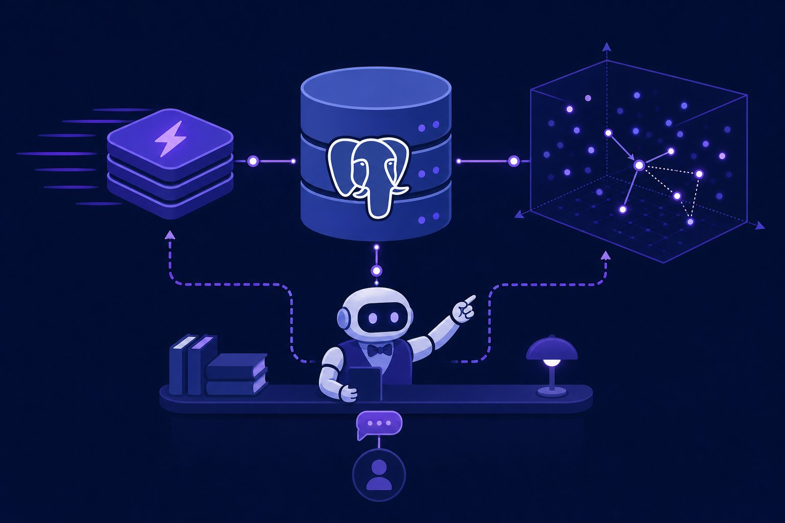

Databases for AI apps
RAG needs vectors, apps need truth, users need speed — no single database does all three. Learn the modern trio (Postgres + pgvector, Redis, vector DBs), when each wins, and the routing pattern that keeps AI apps fast without architectural spaghetti.

Figure 72.1 — System of record (Postgres), speed layer (Redis), meaning layer (vectors). Route each query to its home.
1. The trio (know each one’s job)
| Store | Superpower | Reach for it when |
|---|---|---|
| Postgres + pgvector | Joins + filters + vectors in ONE engine, ACID truth | < ~10M vectors; metadata filtering matters; team of < 5 |
| Redis | Sub-ms cache, rate limits, queues, semantic cache | Repeat queries, hot keys, LLM response caching |
| Qdrant / Pinecone / Milvus | Filtered ANN at 100M+ vectors, hybrid search | Scale/latency SLOs pgvector can’t hit; multi-tenant RAG |
2. Vectors in practice (pgvector first)
-- pgvector: embeddings live next to their metadata
CREATE EXTENSION vector;
CREATE TABLE docs (
id bigserial PRIMARY KEY,
tenant_id int NOT NULL,
text text NOT NULL,
embedding vector(768) NOT NULL
);
-- ANN index (IVFFlat): lists ~ rows/1000, probes trades recall/latency
CREATE INDEX ON docs USING ivfflat (embedding vector_cosine_ops) WITH (lists = 100);
-- filtered similarity: tenant + recency BEFORE the vector scan
SELECT id, text, embedding <-> $1 AS dist
FROM docs
WHERE tenant_id = $2 AND created_at > now() - interval '90 days'
ORDER BY embedding <-> $1
LIMIT 5;# Redis semantic cache: skip the LLM when meaning repeats
import hashlib, json, redis
r = redis.Redis()
def cached_ask(prompt, embed, ask_llm):
key = "llm:" + hashlib.sha256(prompt.encode()).hexdigest()
if hit := r.get(key):
return json.loads(hit) | {"cached": True}
ans = ask_llm(prompt)
r.setex(key, 3600, json.dumps(ans)) # 1h TTL
return ans3. Routing & ops (keep it boring)
- One writer, many readers: Postgres is the system of record; caches and vector stores are DERIVED and rebuildable. Never treat a cache as truth.
- Filter before vectors: tenant, date, permissions in SQL/where-clauses — ANN over the wrong 100M rows is fast and wrong.
- Version embeddings: model upgrades change every vector — store
embed_model + versionper row, backfill offline, dual-read during migration. - Measure recall, not vibes: golden query set with known-good docs; alert when top-5 recall or filtered-QPS latency regresses (Ch 61).
Multi-tenant leaks
A missing tenant_id filter in a vector query leaks one customer’s docs into another’s answers — the RAG equivalent of a data breach. Enforce tenant isolation in the query layer AND test it (negative tests: user A must never retrieve user B’s chunks). Namespaces-per-tenant in hosted vector DBs exist for exactly this reason.
Short notes
Trio: Postgres (+pgvector) = truth, Redis = speed, vector DB = ANN at scale. Start Postgres-only; add Redis for hot reads; vector DB past ~10M vectors/SLOs. pgvector: IVFFlat/HNSW indexes, filter-then-search, <-> cosine. Ops: caches rebuildable, version embeddings, golden recall sets, tenant filters mandatory.
Point notes
- Postgres first, always.
- Filter, then vectors.
- Cache is derived, not truth.
- Version every embedding.
- Tenant-test every query.
MCQs
5 questions1. pgvector’s killer advantage for small teams is:
2. Filtered vector search (tenant + date + similarity) should:
3. Redis semantic/LLM caching primarily buys you:
4. Upgrading your embedding model requires:
5. Move from pgvector to a dedicated vector DB when:
Practice questions
P1. Design retrieval for a 2M-doc multi-tenant support RAG. Stores, schema, query shape.
Postgres + pgvector single engine: docs(id, tenant_id, text, embedding vector(768), embed_version, created_at), IVFFlat/HNSW index. Query: WHERE tenant_id + recency → ORDER BY embedding <-> query → LIMIT 8. Redis in front for exact-repeat prompts (1h TTL). Negative tests per tenant. Recall golden set (200 queries) gates deploys. Vector DB only if latency SLO < 50ms p99 missed.
P2. Tenant A’s answers suddenly quote Tenant B’s docs. Post-mortem: root cause + 3 preventions.
Root cause: a retrieval path missing the tenant filter (new endpoint / cache key without tenant). Fix now: purge shared cache keys, add tenant to every cache key + query, notify. Prevent: (1) negative tests in CI (A can’t retrieve B), (2) query-builder that REQUIRES tenant_id param, (3) separate namespaces/collections per tenant + audit log of cross-tenant similarity hits.
P3. Plan a zero-downtime embedding-model upgrade on 5M rows.
(1) Add embedding_v2 column + version tag; backfill offline in batches with checkpointing. (2) Dual-read: route a % of traffic to v2, compare recall/latency on the golden set. (3) Cut over reads when v2 ≥ v1 on recall with no latency regression; keep v1 for instant rollback. (4) Drop v1 after one stable release. Never mix versions in one index — different spaces, garbage distances.